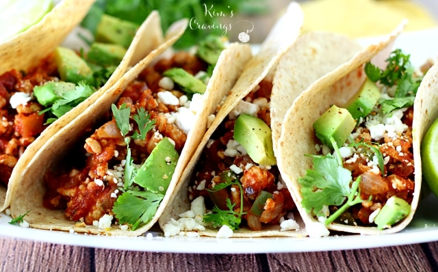
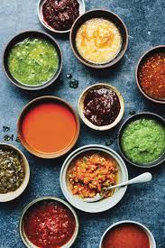

Best tacos on the East Side
Find us @ 345 park ave,San Jose, CA, 95110
Nuestra Historia: We aspire to be the best taco place in San Jose not by selling you tacos but by selling you the warmth and taste of love. For many generations, tacos have been responsible for bringing families together and nurturing the family spirit. Allow us to feed you with the best of the best, allow us to be family.
Click here to visit our menu!Our Specialties:
 
Give us a call at: 1800-TACOS
Store Hours are: Mon-Sun 9AM-11PM